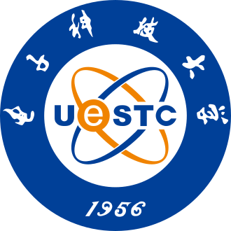
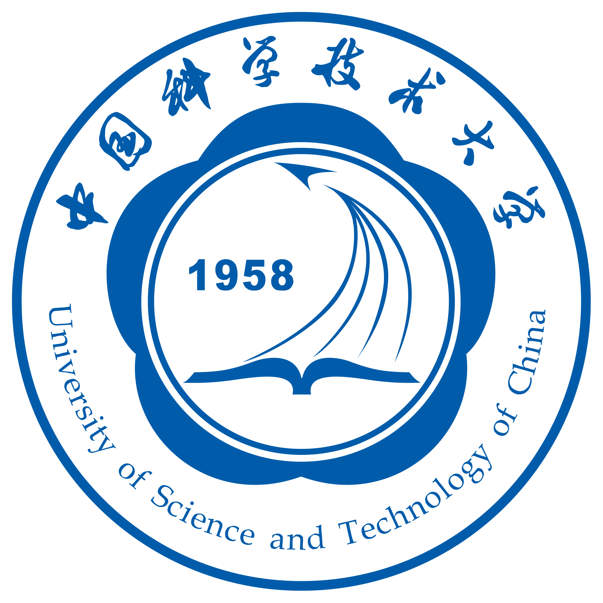
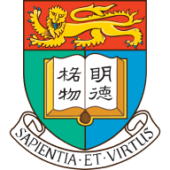
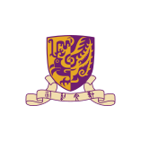
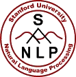

同一个研究问题往往有多个团队持续投入。课题组主页通常会收录论文、项目、成员与报告，能看到一个团队的研究方向和近期工作。
高校与教师名录
学院与教师主页提供研究方向、论文、课程及联系方式。







视觉、机器人与具身
- Stanford Vision and Learning Lab（SVL）：视觉理解与学习，项目包括 BEHAVIOR、ObjectFolder 等。
- Berkeley RAIL：研究学习算法、机器人与视觉，关注通过学习获得灵活的行为。
- 清华大学具身智能实验室：机器人与具身智能研究，相关课程与项目另见具身智能。
- 上海交大 MVIG：机器视觉与智能研究团队，主页收录研究项目、成员与招募信息。
 Berkeley AI Research（BAIR）：涵盖多个 AI 方向的研究社区，研究博客介绍成员的论文与项目。
Berkeley AI Research（BAIR）：涵盖多个 AI 方向的研究社区，研究博客介绍成员的论文与项目。
语言模型与高效计算

Stanford NLP：自然语言处理研究，提供论文、成员信息与教学资源。- MIT HAN Lab：研究高效 AI 计算、模型压缩与部署，包括 AWQ、SmoothQuant 等工作。
- THUDM / THUKEG 开源组织：语言模型、评测与相关开源项目。
工业研究
公司的研究页面持续发布论文、模型和技术文章。
 OpenAI News：模型、研究与产品发布。
OpenAI News：模型、研究与产品发布。 Anthropic Research：模型能力、可解释性与安全等研究。
Anthropic Research：模型能力、可解释性与安全等研究。 Google DeepMind：研究论文。
Google DeepMind：研究论文。- Google Research：各研究领域的论文与技术成果。
相关资料
联系老师、学长与合作 · 研究方向总览 · 资料总索引